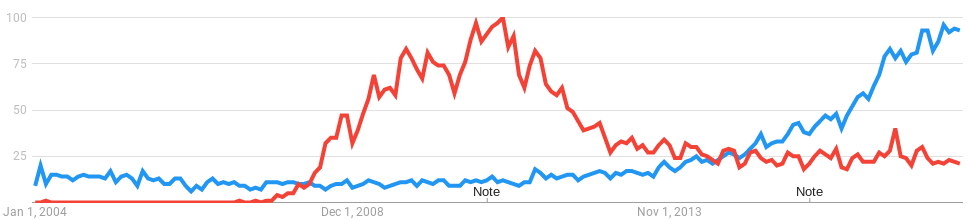

Social Hacking with ML
Devananda van der Veen
twitter: @devananda
devananda.github.io/talks/
Trends...
1999 - "Peer to Peer" networking
2003 - LAMP stack
2008 - Cloud
2016 - Machine Learning

Cloud vs Machine Learning
What can it do?
... and then what?
FireWise
https://cloud.google.com/public-datasets/
$?
Get involved